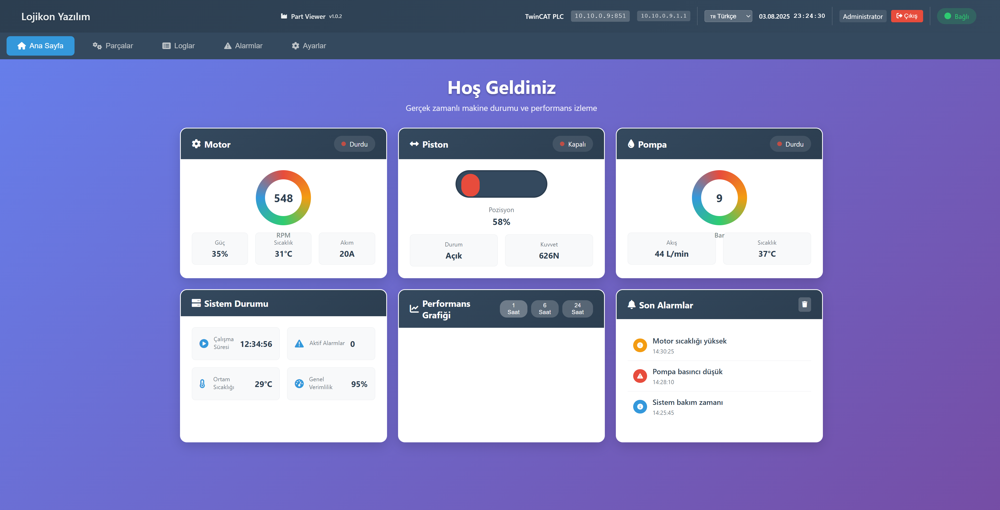
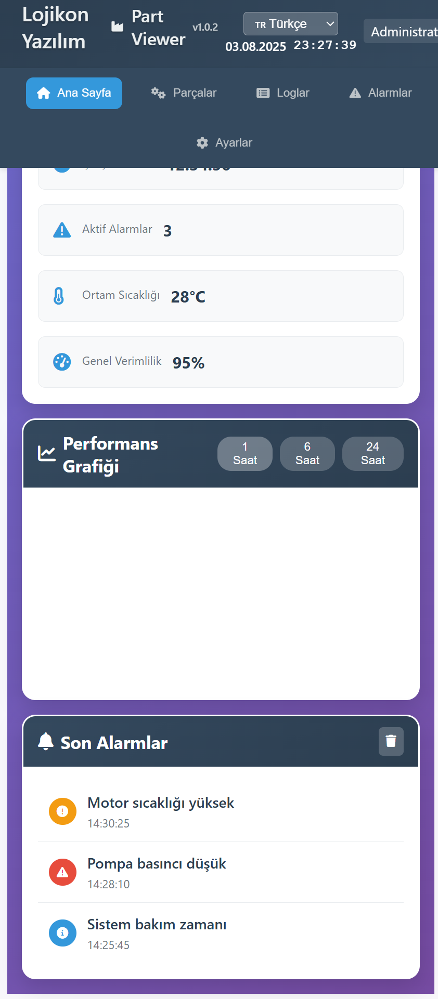

Veri Toplama Sistemleri Galerisi
Gerçek projelerimizden örnekler

HMI Dashboard
Gerçek zamanlı veri toplama ve görselleştirme arayüzü

HMI Kontrol Paneli
Üretim süreçlerini kontrol eden gelişmiş HMI arayüzü

HMI İzleme Ekranı
Detaylı süreç izleme ve alarm yönetimi sistemi

HMI Analiz Dashboard
Performans analizi ve raporlama arayüzü